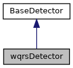

A QRS detector implementing the length transform method. More...
#include <wqrs.h>
Inheritance diagram for wqrsDetector:

Collaboration diagram for wqrsDetector:
Public Member Functions | |
| wqrsDetector (double samplingFrequency) | |
| Construct a new wqrsDetector object. More... | |
| std::vector< double > | lengthTransform (const std::vector< double > &x, int w, double fs) |
| Perform length transform on the ECG signal. More... | |
| std::vector< int > | threshold (const std::vector< double > &x, double fs) |
| Apply thresholding to the transformed signal. More... | |
| std::vector< int > | OfflineDetect (const std::vector< double > &unfiltered_ecg) override |
| Perform offline QRS detection using the wqrs method. More... | |
 Public Member Functions inherited from BaseDetector Public Member Functions inherited from BaseDetector | |
| BaseDetector (double samplingFrequency) | |
| Constructs a BaseDetector object with a specified sampling frequency. More... | |
| virtual | ~BaseDetector ()=default |
| Virtual destructor for BaseDetector. | |
Additional Inherited Members | |
| Protected Attributes inherited from BaseDetector | |
| double | samplingFrequency |
| The sampling frequency of the ECG signal. | |
Detailed Description
This class detects QRS complexes in ECG signals using the wavelet transform and length transformation techniques.
Constructor & Destructor Documentation
◆ wqrsDetector()
|
inline |
- Parameters
-
samplingFrequency The sampling frequency of the ECG signal.
Member Function Documentation
◆ lengthTransform()
| std::vector< double > wqrsDetector::lengthTransform | ( | const std::vector< double > & | x, |
| int | w, | ||
| double | fs | ||
| ) |
This method applies a length transformation to the ECG signal for feature enhancement.
- Parameters
-
x The input ECG signal data. w The window size for the transformation. fs The sampling frequency of the signal.
- Returns
- A vector containing the transformed ECG signal.
◆ OfflineDetect()
|
overridevirtual |
This method processes the entire ECG signal and detects R-peaks using the length transform and thresholding techniques.
- Parameters
-
unfiltered_ecg A vector containing the unfiltered ECG signal data.
- Returns
- A vector of indices representing detected R-peaks in the ECG signal.
Implements BaseDetector.
◆ threshold()
| std::vector< int > wqrsDetector::threshold | ( | const std::vector< double > & | x, |
| double | fs | ||
| ) |
This method applies a threshold to detect potential QRS complexes in the transformed signal.
- Parameters
-
x The transformed ECG signal data. fs The sampling frequency of the signal.
- Returns
- A vector of indices representing detected R-peaks in the ECG signal.
The documentation for this class was generated from the following files:
- include/detectors/wqrs.h
- src/detectors/wqrs.cpp